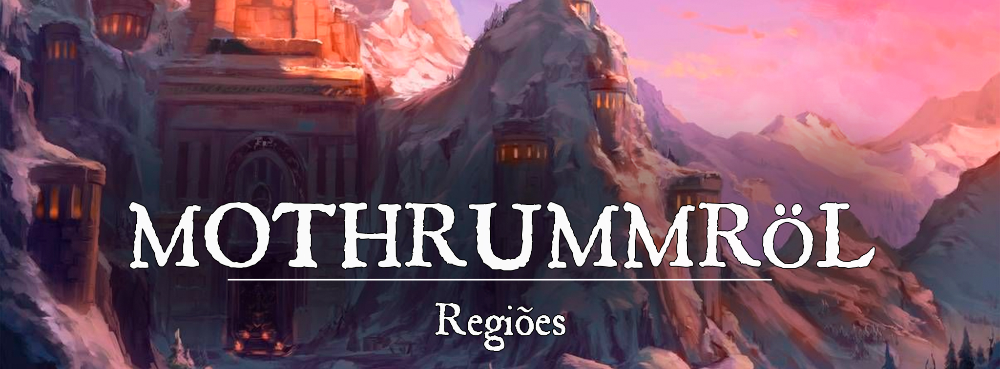

Mothrummröl
Descrição
Mothrummröl é um reino anão antigo situado em uma região montanhosa e fria. Seus habitantes, os anões, orgulhosos e destemidos, lutaram ao longo de milênios para preservar seu lar. A história dos anões foi talhada na pedra, mas, os primeiros anões também eram feitos de pedra. Logo, muita da história enânica está talhada no corpo remanescente de anões tão antigos quanto o mundo.
Geografia:
Mothrummröl é uma região fria e montanhosa, situada a noroeste de Pheros. Sua geografia é marcada por montanhas altas, vales profundos e cavernas escuras. Os anões de Mothrummröl costumam viver em aldeias e cidades construídas nas encostas das montanhas e em cavernas escavadas na rocha. É uma região cheia de rios, lagos e cachoeiras, que são frequentemente utilizados como fontes de água e locais de pesca.
O clima de Mothrummröl é frio e úmido, com invernos longos e neve frequente nas montanhas. Por conta disso, os anões sempre vestem roupas resistentes para se proteger do frio e da umidade. Suas casas também são construídas para resistir ao frio da região, com muitas sendo feitas com uma madeira especial e resistente adquirida em florestas antigas.
Sociedade
População:
Os anões, obviamente, são predominantes em Mothrummröl, mas há a presença de diversas outras raças na região, muitas que são amigas dos anões. Alguns exemplos são:
-
Humanos: Muitos humanos que visitam Mothrummröl são comerciantes que decidem tentar uma vida nova na terra enânica. Os humanos são tão numerosos em algumas cidades que quase ultrapassam a população enânica local.
-
Elfos: Apesar das desavenças ancestrais entre elfos e anões, isso não significa que ambos não possam ter relações pacíficas. Alguns elfos vivem em pequenas comunidades nas florestas de Mothrummröl e frequentemente fazem comércio com os anões. Também há a presença de diplomatas élficos em Mothrummröl tentando selar acordos e discutindo políticas com os anões. A relação entre os elfos e os anões pode ser cordial, mas também pode ser tensa se houver desentendimentos ou interesses conflitantes.
-
Gnomos: Muitos gnomos também vivem em Mothrummröl e são grandes amigos dos anões. Frequentemente vistos como uma “raça abandonada”, os gnomos adotaram muitas tradições dos anões de Mothrummröl.
Cultura:
A cultura de Mothrummröl é extremamente antiga, visto que os anões estiveram entre as primeiras raças a povoar Pheros. Contudo, a cultura e história enânica não foram perdidas com o passar dos anos, pois, desde os primórdios, os anões adotaram o costume de escrever suas conquistas na pedra.
Os anões possuem uma forte ligação com o ferro e a pedra, e acreditam terem sido criados a partir desses materiais. Para os anões, a morte não significa o fim, mas sim o retorno para a pedra, onde serão acolhidos por Makrumm Pratad’Ouro e Brunhild Coração-Quente. Cada história e conquista, os anões fazem questão de transcrever em suas enormes paredes de pedra para que as futuras gerações jamais se esqueçam de onde vieram.
Além disso, os anões de Mothrummröl também são conhecidos por serem excelentes artesãos, especialmente no trabalho da forja que desenvolveram ao longo de milênios. Eles criam armas, armaduras, jóias e muitos outros objetos com habilidade e precisão, e valorizam muito essa característica em sua cultura. Para os anões, cada conhecimento é uma dádiva de Makrumm Pratad’Ouro. Obviamente, Makrumm é o símbolo mais importante para o povo enânico, mas há um enorme respeito por todo o panteão.
Caráter:
Os anões de Mothrummöl são orgulhosos e determinados, um povo que valoriza sua história e tradições. Em muitos casos, eles podem ser obstinados e teimosos em suas crenças e ações, mas também são leais aos seus amigos e aliados. A cultura enânica é muito importante para os anões de Mothrummröl, fazendo com que tenham um grande respeito por seus deuses e antepassados
Economia
Os anões exploram incansavelmente suas montanhas em busca de metais e pedras preciosas. Esses materiais são transformados por mãos habilidosas em armas, armaduras, jóias, móveis e esculturas, e posteriormente vendidos para reinos vizinhos (como Ascalon, Kotka e Tremere).
Mothrummröl também mantém um forte comércio com algumas cidades de Gronnemar, com Ascalon e até mesmo com Skord. Eles importam muitos bens que não conseguem produzir na região montanhosa, como alguns vegetais, frutas e grãos.
A criação de alguns animais também é muito importante na maioria das regiões de Mothrummröl, pois oferecem carne, peles e ossos.
Governo
Mothrummröl é um reino governado por um rei a partir de Kadrel Amorûk.
Poderio Militar:
As principais forças de Mothrummröl estão divididas pelo reino, exércitos de burgomestres e companhias de mercenários. Kadrel Amorûk possui a maior força do reino, com soldados treinados na infantaria, arqueiros e cavalaria pesada (os anões montam cabras gigantes). Além disso, os anões têm acesso a tecnologias militares avançadas, como máquinas de guerra, armas de altíssima qualidade e projéteis incendiários.
Conflito
Mothrummröl é, em muitas ocasiões, uma região perigosa para forasteiros desinformados. As ameaças costumam variar entre monstros e um clima hostil, mas também igualmente perigosos para os despreparados.
-
Gigantes: Desde sempre, os gigantes são um problema para os anões. Eles possuem uma rivalidade ancestral que rapidamente se torna violenta na maioria dos casos. Os gigantes de fogo e os gigantes de gelo são os mais constantes. Os de fogo habitam nas profundezas das montanhas e escavam em túneis próximos aos dos anões. Os de gelo caçam nas proximidades de florestas antigas e montanhas.
-
Bestas: Apesar de nem toda besta ser uma ameaça, algumas recebem destaque por serem especialmente perigosas. Lobos e ursos gigantes podem se tornar pesadelos constantes para os anões.
-
Outros Anões: Os anões também vivem conflitos internos e violentos. A exploração das Estradas Subterrâneas continua, bem como a rivalidade com os duergares.
Origem
Na Era das Trevas:
O Primeiro Período das Trevas (0y ~ 12.000y) Os anões, nascidos da pedra e do ferro, estão entre as primeiras raças que povoaram o continente. O primeiro de todos os anões a despertar em Pheros foi Magni, o Imortal, que viveu por milhares de anos, mais do que qualquer outro anão viria a viver. Assim como os primeiros da raça, a carne de Magni era feita de pedra, mas mais do que isso, como muitos anões também acreditam que Magni possuía o sangue de Makrumm Pratad’Ouro correndo em suas veias. As mãos habilidosas de Magni foram responsáveis por forjar os primeiros machados, escudos e armaduras de seu povo, e acima de tudo, responsáveis por erguerem Kadrel Amorûk como um refúgio para todos os filhos de Makrumm Pratad’Ouro. A importância de Magni para a cultura enânica é enorme, pois ele também foi o primeiro que decidiu talhar suas conquistas em seu próprio corpo feito de pedra. Seus irmãos passaram o costume adiante, e mesmo quando se tornaram carne e sangue, ainda assim mantiveram o costume de talhar a história em pedra. Há relatos extremamente antigos talhados nas profundezas de Kadrel Amorûk sobre as viagens de Magni, suas conquistas e seus aprendizados.
A cidade de Kadrel Amorûk não foi apenas o primeiro marco da civilização enânica na história, como também um lar e refúgio para todos os anões que sofriam pela guerra entre dragões e gigantes. Os anões eram pequenos demais para competir com a força bruta de um gigante e com as chamas de um dragão em voo, no entanto, tinham a engenhosidade e a determinação concedida por Makrumm Pratad’Ouro para construir e perseverar. Não apenas isso, como também eram feitos literalmente de pedra para conseguir sobreviver em um mundo de colossos. De seu pequeno refúgio e sob a liderança do lendário Magni, o Imortal, os anões conseguiram resistir por milênios.
Kadrel Amorûk não foi o único refúgio para os anões na Era das Trevas. Ainda havia as Estradas Subterrâneas, uma vasta rede de túneis escavados pelos primeiros anões discípulos de Durin Olho-Rubi e Dryta Ouronegro. Ao longo de gerações, esses túneis foram se expandindo e servindo de abrigo para alguns anões, no entanto, também se mostraram um lugar bastante perigoso. As bestas de Mahrvos foram as primeiras a tomar o subterrâneo para si, entrando rapidamente em confronto com os anões escavadores. Muitos túneis das Estradas Subterrâneas foram perdidos com o passar dos anos, deixando as ruínas para diversos outros que viriam depois para o subsolo.
Por milênios, Magni lutou pelo futuro de sua raça, por seu lar e pela honra do panteão Berg’óir. Quando se tornou muito velho, Magni começou lentamente a se tornar pedra inanimada, ficando cada vez mais lento e pesado. Ainda assim, Magni viveu por aproximadamente dez mil anos, e mesmo quando faleceu, continuou a ser proclamado como imortal. No momento de sua morte, Magni disse estar voltando à pedra de que foi criado, se tornando parte do mundo e dos anões para todo o sempre. Os primeiros anões eram feitos de pedra e tinham o costume de talhar suas histórias, descobertas e conquistas em sua própria pele. Por causa disso, os ensinamentos de Magni jamais foram esquecidos pelo povo anão.
A guerra entre dragões e gigantes perdurou por muito tempo e quase consumiu o mundo inteiro. Dificilmente alguns dos lados pendiam para ser derrotados. Foi apenas com uma aliança improvável entre os dragões e os anões que a guerra finalmente caminhou para seu desfecho. Tendo aprimorado a arte da forja por gerações, os anões serviram como ferreiros para os dragões, criando armaduras gigantescas e pesadas para aguentar os golpes dos gigantes, mas ainda eficiente o suficiente para não impedir o voo dos dragões. Não apenas isso, como também foram capazes de expulsar os gigantes que invadiram suas montanhas e cavernas com o auxílio dos dragões. Pela primeira vez na história, os anões não viviam apenas para resistir e a guerra lendária dos colossos encontrou um desfecho com a vitória dos dragões.
Com a derrota dos gigantes, os anões puderam finalmente descansar. O lendário Magni, o Imortal, ainda vivia quando a guerra encontrou um desfecho, no entanto, morreu pouquíssimo tempo depois devido a sua idade extrema. Após a morte de Magni, os anões que vieram depois não vinham mais ao mundo feitos de pedra. Ao invés disso, eram carne e sangue, menos resistentes que seus antepassados, mas de forma alguma menos indignos. Esses anões puderam provar seu valor posteriormente quando enfrentaram os dragões cromáticos ao lado dos dragões metálicos e dos elfos.
A paz entre os dragões se tornou improvável devido à natureza da raça. Os anões conseguiram se aprimorar ainda mais como uma civilização, mas logo precisaram se prontificar novamente para outra guerra. Quando o confronto se iniciou, os anões já estavam aliados aos dragões metálicos. Uma aliança com os cromáticos era simplesmente impossível, pois a maldade e tirania desses dragões era contra tudo o que os anões acreditavam. Foi nesse período em que os elfos surgiram de Faéria como um povo extremamente poderoso e afeiçoado à magia, e assim como os anões, também se aliaram aos dragões metálicos. Essa poderosa aliança não poderia ser combatida pelos dragões cromáticos, no entanto, ainda assim houveram inúmeras perdas. Com tantos anos de guerra e destruição, os dragões, tanto os cromáticos quanto os metálicos, estavam à beira da extinção. Derrotados, os dragões cromáticos se isolam do mundo, enquanto os dragões metálicos buscam se recuperar e acabam também se isolando.
Os anões provaram seu valor contra os dragões cromáticos e finalmente poderiam retornar ao lar para se recuperar uma vez mais. Contudo, para a infelicidade dos anões, eles encontram os gigantes exilados em posse de seus lares. Mais sangue seria derramado antes que os anões pudessem ter a chance de descansar novamente.
Precisando buscar ajuda com seus antigos aliados para lidar com os invasores, os anões recorreram aos dragões metálicos, mas não os encontraram em nenhum canto do mundo. Eles tentam clamar por ajuda aos elfos, mas não encontram nenhuma misericórdia com seus antigos aliados. Obrigados a lidar sozinho com seus problemas, os anões se ressentem por esse momento da história.
O Segundo Período das Trevas (12.000y ~ 30.000y) Quando não encontraram nenhuma ajuda para lidar com seus problemas, os anões tiveram que se isolar em suas montanhas e cavernas. A cultura do povo enânico estava bem desenvolvida, no entanto, um novo confronto com os gigantes ocasionou para que não criassem um império mais diverso. Por terem se aperfeiçoado por milênios e estarem enfrentando colossos derrotados, os anões agora eram capazes de ter uma luta mais justa.
A locomoção em seu próprio terreno se tornou extremamente necessária, ocasionando no retorno para as Estradas Subterrâneas. Essa tarefa se demonstrou árdua, pois com o fim da guerra dos colossos, muitas outras raças acabaram por vir ao mundo. Algumas delas escolheram reivindicar o subterrâneo para si, dificultando ainda mais para que os anões retomassem suas ruínas. Além disso, os anões de Dryta Ouronegro, os duergares, eram pouquíssimos amigáveis com seus irmãos. Apenas uma pequena parte das Estradas Subterrâneas foram recuperadas com as expedições.
Os milênios que se seguiram para os anões foram formados por inúmeras batalhas. Mesmo sozinhos, os filhos de Makrumm Pratad’Ouro jamais perderam sua determinação. Lentamente, seus lares foram sendo recuperados e seus inimigos, derrotados. A engenhosidade enânica e as bênçãos de seu panteão foram invocadas inúmeras vezes durante essa trajetória.
O Terceiro Período das Trevas (30.000y ~ 32.000y) Após milênios tentando reconstruir sua nação em meio a tantas batalhas, os anões finalmente conseguem se consolidar. Ainda restavam muitas pontas soltas, muitos lares que ainda precisavam ser recuperados e inimigos poderosos que precisavam ser derrotados, mas os anões agora eram capazes de realmente viver no reino que construíram. Vilas e cidades começaram a ser fundadas, muralhas erguidas para protegê-las e um povo crente em sua própria força de vontade. Os anões de forma alguma esqueceram seus antepassados e seus deuses, então muitas estátuas foram erguidas em sua homenagem. Enquanto outros vinham para conhecê-los, os anões perceberam que passaram muito tempo isolados do resto do mundo, e que praticamente não conheciam ninguém para longe de suas terras. As primeiras alianças entre os anões e os homens começaram a se formar nessa época.
No final da era das trevas, na época em que todos acreditavam na extinção dos dragões, surge Hraesvelgr, um poderoso dragão que tomou a cidade de Mertordir para si. O poder da criatura se mostrou imbatível e os anões não foram capazes de recuperar Mertordir, mas não deixaria nenhum dragão arrogante tomar o que era deles por direito. Foi então que, com um plano insano e o apoio de um rei furioso, os anões invocaram uma poderosíssima magia para destruir Hraesvelgr… e toda a cidade junta. Um meteoro desceu dos céus e atingiu Mertordir, afundando a cidade e matando de uma vez por todas o dragão.
Na Primeira Era: Com a chegada da Primeira Era, os anões de Mothrummröl vivenciaram um período de prosperidade e crescimento. Depois de milênios lutando por sobrevivência e se defendendo de inimigos poderosos, os anões conseguiram se estabelecer e construir uma sociedade mais pacífica.
Durante a Primeira Era, os anões começaram a se estabelecer em regiões mais ao norte de seu reino, criando novas cidades e vilas. O contato com outras raças também foi desenvolvido, e os anões estabeleceram relações com os humanos, os gnomos e até os elfos. O comércio se expandiu rapidamente e os anões se viram em um momento de paz.
Na Segunda Era (Atual Era):